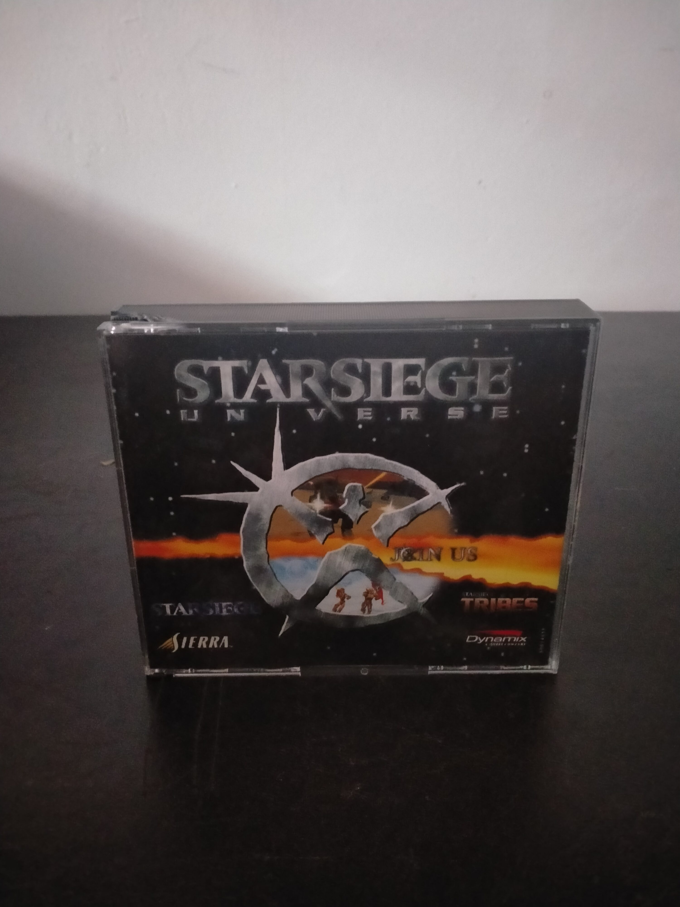

Ficha #000000
Starsiege Universe
Starsiege Universe es una recopilación para PC que reúne Starsiege y Starsiege: Tribes, dos producciones desarrolladas por Dynamix y ambientadas en el universo de ciencia ficción iniciado con Metaltech: Earthsiege. Starsiege propone una simulación de combate mecanizado con campañas para humanos y cybrids, pilotaje de vehículos HERC y personalización de armamento, mientras que Starsiege: Tribes traslada el mismo trasfondo a un shooter en primera persona diseñado principalmente para enfrentamientos multijugador por equipos. Tribes destacó por sus extensos escenarios exteriores, el uso de jetpacks, vehículos y clases de armadura, así como por modos basados en objetivos que anticiparon buena parte de la evolución posterior del juego competitivo en línea. Esta edición en estuche jewel case, también conocida comercialmente como Tribes Action Pak, conserva en un mismo paquete dos aproximaciones jugables complementarias al universo Starsiege.
- Formato
- Jewel Case
- Plataforma
- Win95 Win98 WinNT
- Género
- Compilación Simulación de combate Simulador de mechas Shooter en primera persona Acción multijugador Ciencia ficción
- Serie
- Todos Jewel Case
- Desarrollador
- Dynamix
- Distribuidor
- Sierra On-Line
- EAN
- —
Contenido de la edición
- Caja jewel case
- 2 CD-ROM
Preservación
- Protección
- No determinado
- Formato recomendado
- BIN/CUE
- Jugable en virtualización
- Sí
Se recomienda preservar individualmente los dos CD-ROM mediante imágenes BIN/CUE, conservando la estructura de pistas y documentando qué disco corresponde a Starsiege y cuál a Starsiege: Tribes. La ejecución virtual es viable mediante un entorno Windows 95, Windows 98 o Windows NT correctamente configurado; las funciones multijugador originales pueden depender de servidores comunitarios o conexiones de red compatibles.